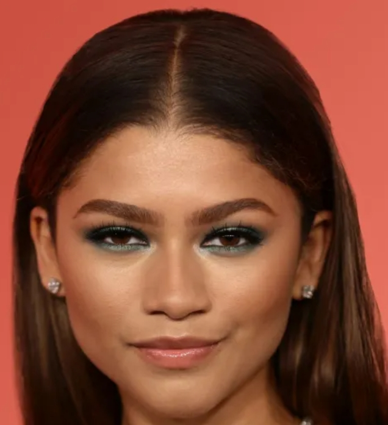
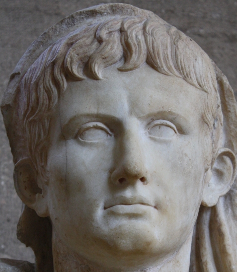
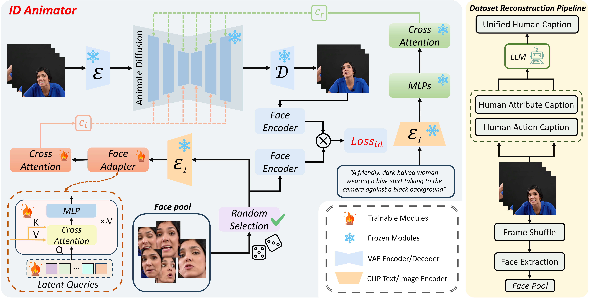

ID-Animator: Zero-Shot Identity-Preserving Human Video Generation
* Intern in Tencent ✉ Corresponding Authors
[Paper] [Code] [Huggingface space]



[Paper] [Code] [Huggingface space]
Our method consistently exhibits reliable facial preservation and motion generation capabilities in Community Models


Generating high fidelity human video with specified identities has attracted significant attention in the content generation community. However, existing techniques struggle to strike a balance between training efficiency and identity preservation, either requiring tedious case-by-case finetuning or usually missing the identity details in video generation process. In this study, we present ID-Animator, a zero-shot human-video generation approach that can perform personalized video generation given single reference facial image without further training. ID-Animator inherits existing diffusion-based video generation backbones with an face adapter to encode the ID-relevant embeddings from learnable facial latent queries. To facilitate the extraction of identity information in video generation, we introduce an ID-oriented dataset construction pipeline, which incorporates decoupled human attribute and action captioning technique from a constructed facial image pool. Based on this pipeline, a random face reference training method is further devised to precisely capture the ID-relevant embeddings from reference images, thus improving the fidelity and generalization capacity of our model for ID-specific video generation. Extensive experiments demonstrates the superiority of ID-Animator to generate personalized human videos over previous models. Moreover, our method is highly compatible with popular pre-trained T2V models like animatediff and various community backbone models, showing high extendability in real-world applications for video generation where identity preservation is highly desired. Code will be released at https://github.com/ID-Animator/ID-Animator.
Given a reference ID image, ID-Animator endeavors to produce high-fidelity ID-specific human videos. This figure demonstrates our methods, featuring three pivotal constituents: a dataset reconstruction pipeline, the ID-Animator framework, and a random reference training method employed during the training process of ID-Animator.

ID-Animator Framework Our ID-Animator framework consists of a text-to-video model and a face adapter for efficiency. We use AnimateDiff as our base model and design a simple face adapter module for fast training and video generation with identity preservation.
Dataset Reconstruction Pipeline Due to the lack of identity-focused datasets for video generation, we reconstruct the CelebV-HQ dataset into an identity-oriented human dataset. This involves generating decoupled human captions and detecting and constructing a faces pool.
Random Reference Training for Diminishing ID-Irrelevant Features During training, we randomly select a reference image from a pool of previously extracted face pool. By employing this Monte Carlo technique, the features from diverse reference images are averaged, reducing the influence of identity-invariant features.
We demonstrate the generation capabilities of our ID-Animator under basic prompts.
The contextual information of characters can be tailored through text, encompassing attributes such as hair and clothing, creating novel character backgrounds, and enabling them to execute specific actions, as well as gender and age.

A bald man with a neatly trimmed beard, showcasing his shiny scalp, eating food
A man with dyed pink and purple hair, styled in a high ponytail
Through the blending of embeddings from two distinct IDs in varying proportions, we have effectively combined features from both IDs in the generated video.


We can supply either single frame control images or multi-frame control images. When a single frame control image is provided, the generated result adeptly fuses the control image with the face reference image. In cases where multiple control images are presented, the generated video sequence closely adheres to the sequence provided by the multiple images
Single Sketch-to-Video = Sketch Image + ID Image
Input sketch
Reference Image
Output Video
Output Video
Sketch Sequence-to-Video = Sketch Sequence + ID Image
sketch Sequence
Reference Image
Output Video
Output Video
Our project page is borrowed from DreamBooth.